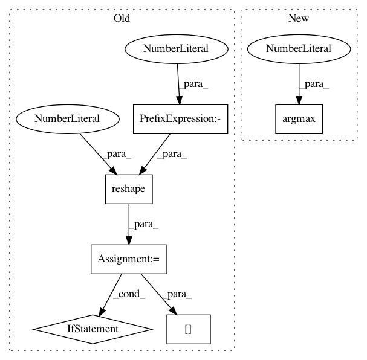

e8d6fd1a77df735a6362003014515d8249617011,deslib/des/des_clustering.py,DESClustering,classify_with_ds,#DESClustering#Any#Any#Any#Any#Any#Any#,276
Before Change
Predicted class label for each test example.
if query.ndim < 2:
query = query.reshape(1, -1)
if predictions.ndim < 2:
predictions = predictions.reshape(1, -1)
if query.shape[0] != predictions.shape[0]:
raise ValueError(
"The arrays query and predictions must have the same number"
" of samples. query.shape is {}"
"and predictions.shape is {}".format(query.shape,
predictions.shape))
selected_classifiers = self.select(query)
votes = predictions[
np.arange(predictions.shape[0])[:, None], selected_classifiers]
predicted_label = majority_voting_rule(votes)
return predicted_label
After Change
proba = self.predict_proba_with_ds(query, predictions, probabilities,
neighbors, distances, DFP_mask)
predicted_label = proba.argmax(axis=1)
return predicted_label
def predict_proba_with_ds(self, query, predictions, probabilities,
neighbors=None, distances=None, DFP_mask=None):
In pattern: SUPERPATTERN
Frequency: 3
Non-data size: 6
Instances
Project Name: scikit-learn-contrib/DESlib
Commit Name: e8d6fd1a77df735a6362003014515d8249617011
Time: 2021-03-27
Author: rafaelmenelau@gmail.com
File Name: deslib/des/des_clustering.py
Class Name: DESClustering
Method Name: classify_with_ds
Project Name: IBM/adversarial-robustness-toolbox
Commit Name: 401ea8b316cb38a57094c695004e4f1714079677
Time: 2020-11-20
Author: beat.buesser@ie.ibm.com
File Name: art/attacks/inference/membership_inference/black_box_rule_based.py
Class Name: MembershipInferenceBlackBoxRuleBased
Method Name: infer
Project Name: scikit-learn-contrib/DESlib
Commit Name: e8d6fd1a77df735a6362003014515d8249617011
Time: 2021-03-27
Author: rafaelmenelau@gmail.com
File Name: deslib/des/des_mi.py
Class Name: DESMI
Method Name: classify_with_ds